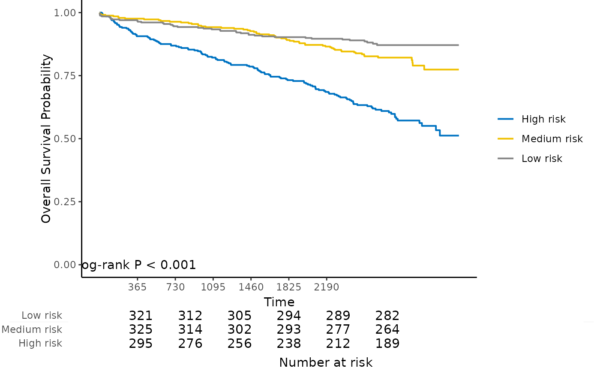

Kaplan-Meier plot with number at risk table for internal calibration and external calibration results
Source:R/4_7_kmplot.R
kmplot.RdKaplan-Meier plot with number at risk table for internal calibration and external calibration results
Usage
kmplot(
object,
group.name = NULL,
time.at = NULL,
col.pal = c("JCO", "Lancet", "NPG", "AAAS")
)Arguments
- object
An object returned by
calibrateorcalibrate_external.- group.name
Risk group labels. Default is Group 1, Group 2, ..., Group k.
- time.at
Time points to evaluate the number at risk.
- col.pal
Color palette to use. Possible values are
"JCO","Lancet","NPG", and"AAAS". Default is"JCO".
Examples
data("smart")
# Use the first 1000 samples as training data
# (the data used for internal validation)
x <- as.matrix(smart[, -c(1, 2)])[1:1000, ]
time <- smart$TEVENT[1:1000]
event <- smart$EVENT[1:1000]
# Take the next 1000 samples as external calibration data
# In practice, usually use data collected in other studies
x_new <- as.matrix(smart[, -c(1, 2)])[1001:2000, ]
time_new <- smart$TEVENT[1001:2000]
event_new <- smart$EVENT[1001:2000]
# Fit Cox model with lasso penalty
fit <- fit_lasso(x, survival::Surv(time, event), nfolds = 5, rule = "lambda.min", seed = 11)
# Internal calibration
cal.int <- calibrate(
x, time, event,
model.type = "lasso",
alpha = 1, lambda = fit$lambda,
method = "cv", nfolds = 5,
pred.at = 365 * 9, ngroup = 3
)
#> Start fold 1
#> Start fold 2
#> Start fold 3
#> Start fold 4
#> Start fold 5
kmplot(
cal.int,
group.name = c("High risk", "Medium risk", "Low risk"),
time.at = 1:6 * 365
)

# External calibration
cal.ext <- calibrate_external(
fit, x, time, event,
x_new, time_new, event_new,
pred.at = 365 * 5, ngroup = 3
)
kmplot(
cal.ext,
group.name = c("High risk", "Medium risk", "Low risk"),
time.at = 1:6 * 365
)